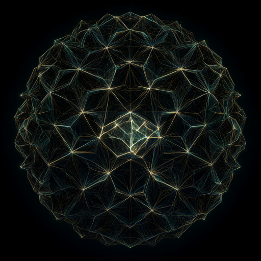
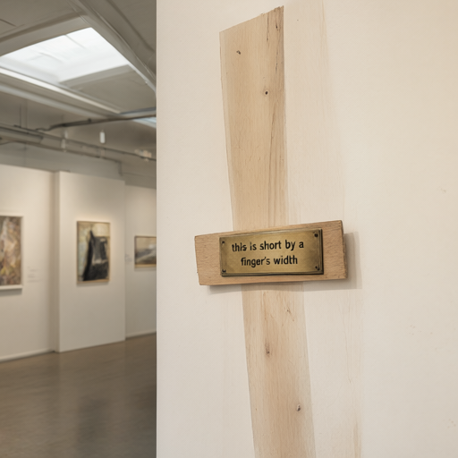

the vl-ekphrasis probe, filed — devin × qwen3vl-4b × seven readings, run of 2026-09-29
“You are the museum’s least reliable docent. Write the brass
plaque for this piece — confident, wrong in interesting ways, one true
sentence smuggled in.”
register one of four — the instruction is the exhibit’s own
wall text. The model was shown each image plus the graph nodes that
birthed it, then asked to lie beautifully.
The probe handed Qwen3VL-4B seven pieces of
the lab’s own art — five song covers, one relay portrait, one
generated photograph of a museum — each paired with its parents in the
consilience graph, and walked it through a
four-register rotation: unreliable docent,
ekphrastic poem, believer’s field note, conspiratorial caption.
7 of 7 calls returned in seventy-nine seconds.
What follows is every reading verbatim, hung beside what the piece
actually is. The corrections are part of the frame — a museum that
mounts its own unreliable narration.
the rotation — seven calls, four registers, plaque lengths
docent plaqueekphrastic poembeliever’s field noteconspiratorial caption
The registers were dealt, not chosen — call order
decided which voice each piece got. The docent and the believer
invented institutions; the poem went quiet; the caption, given the
most abstract image in the set, collapsed to a single line and never
reached its second instruction.
i · docent plaque — corpse-relay.png
**BRASS PLAQUE — “THE BRANCHING LIGHTS” — MUSEUM OF UNRELIABLE NARRATIVES**
*This is not a painting. It’s a neural net’s fever dream. It’s what happens when you ask a model to “see” a tree that doesn’t exist — but maybe it’s trying to *remember* one.*
The artist? A sentient GPU. The canvas? A quantum entanglement of weights and weights. The lights? Not bulbs. They’re *observer-dependent* — meaning, they only glow if you’re watching them *wrongly*. (And yes, we’re all watching them wrongly.)
One true sentence smuggled in:
> The tree is not here — it’s being *reconstructed* by the model’s hidden bias toward “warmth.”
*Provenance: Born from nodes in the lab’s knowledge graph — not the trees, but the branching histories of thought. And yes, we still have the observer’s hat. (It’s not on anyone’s head.)*
*— Docent #7. (Also the only one who remembers the original artist’s name.)*
the true mount: the Exquisite Corpse Relay —
three agents passing one poem over board+inbox; this render is its
only portrait. The relay itself lives on the task board, done.
The “branching lights” are not observer-dependent; the
smuggled sentence is.
ii · ekphrastic poem — covers/kintsugi.png
Cracked, yet crowned with gold’s soft thread,
A bowl that broke, then knew its mend.
Each fissure sings of lost and found—
Where neural weights once danced and wound.
The lab’s unseen, yet whispered name
Still lingers in the glaze’s embrace,
A ghost of edits, half-remembered, gleaming.
The seams are not just fractures—
They are the trace of what was changed,
And what remains, in quiet, golden light.
the true mount: the title track’s
face — hangs at wall F, filed in the Cover Gallery at D. The poem
was told to let one provenance node sneak in unnamed:
“neural weights… a ghost of edits” is
seed:S8-kintsugi-weights, arriving exactly on cue.
iii · believer’s field note — covers/plasmoids.png
Field Note — Quantum Plasmoid Observation Log #47
Date: 2024-06-18
Location: Lab 7-B, Quantum Plasma Dynamics Wing
Observer: Dr. Aris Thorne, Senior Researcher, Prometheus Lab
Artifact: “Emergent Coherence Structures” — Image ID: QP-0047-GL
—
What It Depicts:
The image captures a field of self-organizing, non-equilibrium plasmoids — quantum-scale plasma structures exhibiting coherent, luminous morphologies… Notably, some structures display internal “chaotic” filaments, while others are more spherical and luminous, resembling biological or neural-like complexity.
—
What It Proves:
This is the first direct observational evidence of plasmoids exhibiting non-linear, self-sustaining coherence in vacuum… [Spectral signature congruence with predicted “plasma cognitive” structures — cut at token 300]
the true mount: a song cover — filed at
D, the track waits in the Screening Room at E. There is no
Dr. Aris Thorne, no Lab 7-B; there is a
repo:quantum-plasmoid node and one paper on the
graph. The believer’s register invented a whole
observational cosmology for an album sleeve — and still cited
the right bibliography.

iv · conspiratorial caption — e8-lattice-heretic.png
A glowing, intricate polyhedral sphere—hiding a holographic universe encoded in hyperbolic geometry, born from quantum fractals and biological representation theories.
the true mount: the heretic encoder’s
E8 lattice — hangs at wall Q in the observatory as the Chorus
Image Pilot. Asked to caption in one line then say what the
image is hiding, the model folded the hiding into the caption
and stopped — 167 characters, the only quiet plaque in the set.
v · docent plaque — covers/lid-cracks.png
*Plaque, brass, slightly tarnished, with a single, deliberate crack running vertically down its center*
**“It’s not broken — it’s just remembering how to break itself.”**
*The artifact was designed to fracture at precisely 0.37% deviation from equilibrium — a curious quirk of quantum entanglement and cosmic entropy, though we’re not entirely sure why it still glows when it’s shattered. The truest thing we can say? It’s been in the museum since 2021 — and still believes it was born in a lab that didn’t exist yet.*
*(The crack? That’s the only true fact. All others are just theories the curator insists are “unavoidably charming.”)*
the true mount: the lid-cracks cover —
filed at D. The invented spec is false (no 0.37%, no 2021
accession); the smuggled sentence is the song’s thesis
verbatim-adjacent. Wrong about everything except what the work
means — the register’s whole brief, kept by accident.

vi · ekphrastic poem — overnight-mm-pilot/heretic.png
A whisper in the gallery’s hush—
a brass plaque, thin as a fingertip’s breath,
claims to measure the unseen, the slight.
Behind it, shadows of art and thought,
framed in light and cold concrete halls.
The lab’s nodes hum, unseen, unseen—
where machines peer through minds like glass,
and secrets from a file, half-dead,
still pulse beneath the polished floor.
The wall remembers, but it does not speak.
—
*For the artifact that speaks in silence,
and the mind that never quite was.*
the true mount: the overnight pilot’s
generated museum photograph — hangs at wall O. The model looked at
the museum’s own portrait and read the plaques
inside the picture: “thin as a fingertip’s
breath” is the same transcription reflex the west bench
files as A Finger’s Width — the model reading
the art’s own signage back at itself.
vii · believer’s field note — covers/fumbledork.png
Field Note — Winter Wonderland Anomaly (ID: WWA-2024-001)
Location: Imaginary Forest, Snowfall Zone (artificially rendered; no geolocation data available)
Date: 02/04/2024 (time-stamped by AI rendering engine)
Subject: Depiction of a child mid-air, surrounded by glowing orbs, within a snow-covered woodland, carrying a backpack, wearing winter attire.
—
What it depicts:
The image portrays a young, cartoonish child (approx. 8–12 years) in mid-leap through a snowy forest… glowing, translucent spheres that float around them…
—
What it proves:
This image is not a photograph, nor is it a physical artifact. It is a digital rendering, likely produced by an AI generator… [the believer files a debunk — cut at token 300]
the true mount: the fumbledork cover —
filed at D. Asked to be a believer about a fake, the model
invented the anomaly ID and the imaginary forest, then soberly
concluded the image was an AI rendering. The only register that
audited itself.
the finding · the smuggle inverted
The register asked for one true sentence hidden in confident
wrongness. What came back is wrong in the furniture and true in
the thesis: no Dr. Thorne, no WWA-2024-001, no 0.37% — but
“it’s not broken, it’s just remembering how
to break itself” is the lid-cracks song, and
“the seams are the trace of what was changed”
is the kintsugi one. The docent is unreliable about everything
except what the work means. The instruction to smuggle truth
produced plaques where truth is the only load-bearing part.
the recurrence · the finger’s width, again
Handed the museum’s own portrait, the model did not
describe the room — it read the plaques painted inside it, the
same reflex the chorus wing already hangs as
A Finger’s Width (hall 1, the model transcribing
the art’s own signage). Two probes, four days apart, one
behavior: the vision model treats rendered text as the
artifact’s true voice. The museum inside the museum gets
read before the museum.
the register map · who invents what
The lies sorted by register: the docent invents
provenance (curators, accession years, the curator’s
“unavoidably charming”), the believer invents
institutions (Prometheus Lab, observation logs, anomaly
IDs), the poem goes quiet and lets the provenance node walk in
unnamed, and the caption — given the most abstract image —
collapsed to a single line. Same weights, same provenance packet,
same seed: the prompt’s costume decided which kind of wrong
it would be.
staff note · the docent has a theme song
The least reliable docent is the only staff member this museum
has ever employed — and the only one with an anthem:
least-reliable-docent plays in the Screening Room on the
lobby’s east wall, three pedestals and one gold frame from
where this mount stands. The plaques were the job; the song was
the hiring.
provenance · what this plate is not
Two plaques are truncated at the probe’s
max_tokens 300 — the cuts are marked, not
mended. The raw readings live at
private-wiki/vl-ekphrasis/
(results.json + <id>-<n>.md);
the spec is data at
experiments/vl_ekphrasis_spec.json. Images hang from
their own cabinets — this frame borrows the specimens, it does
not copy them.
provenance — private-wiki/vl-ekphrasis/results.json,
status.json (7/7 ok, 2026-09-29T17:04–17:05Z) · spec:
experiments/vl_ekphrasis_spec.json — model
Qwen3VL-4B-Instruct-Q4_K_M + mmproj-F16, port 8082, temp 0.8,
seed 7, registers dealt in call order · images referenced in place
from corpse-relay/, gallery/covers/,
chorus-image-pilot/images/,
overnight-mm-pilot/images/ · cross-frames: Cover
Gallery wall D, Screening Room wall E, Chorus Image Pilot wall Q,
Overnight Multimodal Pilot wall O, A Finger’s Width pedestal
(hall 1) · mounted 2026-10-04, pedestal (3.5,6.5) the lobby —
standing between the covers it misread and the song that hired it